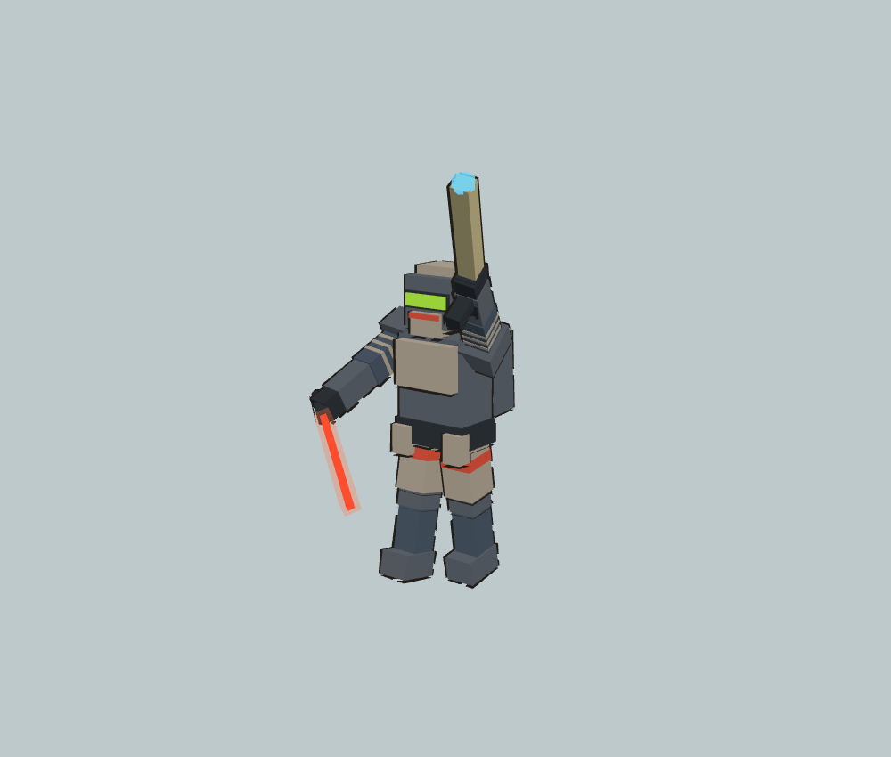
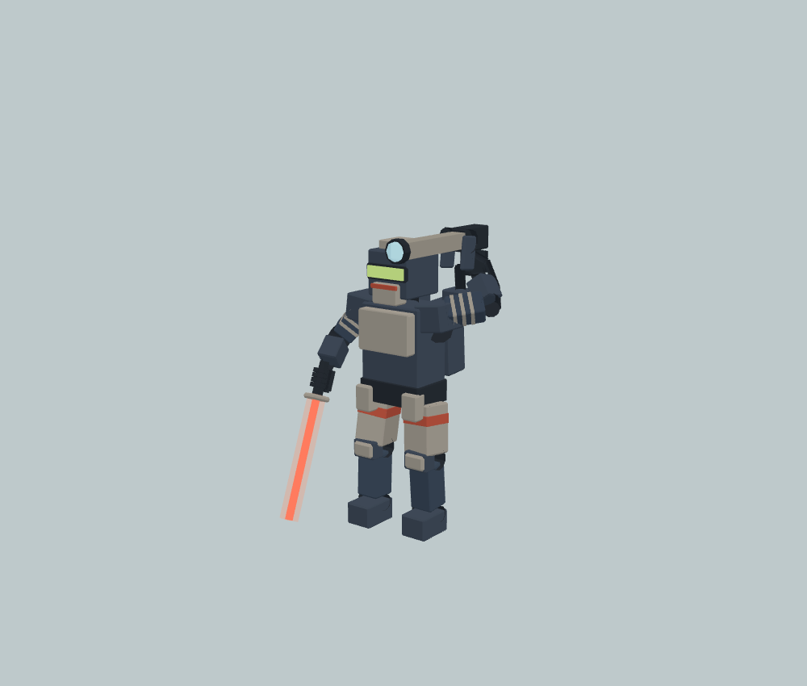
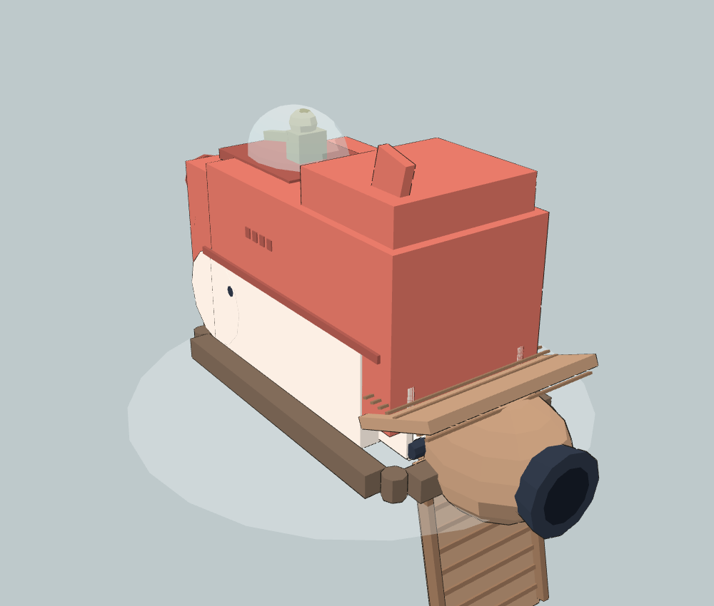
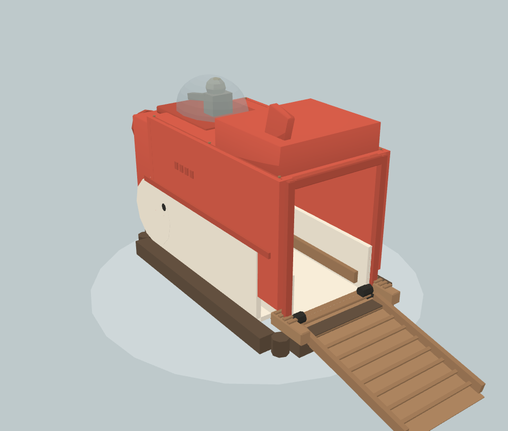

原页面只调用旧工厂，27名重甲与3艘SOCCO均未接优化。现真实生产页面检查：27名新版重甲、3艘新版SOCCO，无漏接、无页面运行错误。以下是同一网页模型工厂的独立渲染，不是自然战斗截图。




已接新版几何、材质与原动作接口。网页坡道已接真实地面采样，三艇泊位与434个舱内路径采样通过；巨石/树木避让与自然战斗、上下船全流程仍待验。本轮地形检查战船v4等其他候选不包含在这次网页接入中。
打开实际游戏 · 生产页面检查 · 模型动作检查 · 返回总览